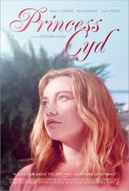

Princess Cyd
4/10
Why couldn’t Katie just go to the globdamn party, that’s what I want to know. The plot twist is just for the straightness (Amy Neece, 2020) of things. It’s like Stephen Cone just decided, “How can we add some stupid bullshit to the plot that involves the main characters engaging in heterosexual activity? I know, let’s add a almost rape scene and an uncomfortable almost sex scene.” Fucking dumb. The ending was not good. I feel like I didn’t get a happy ending. Just a mediocre ending. I read an article about Stephen Cone and how he felt like he didn’t get enough praise for this movie. I think that the tepid response was more than enthusiastic enough for what this movie deserves. I would not recommend this movie.